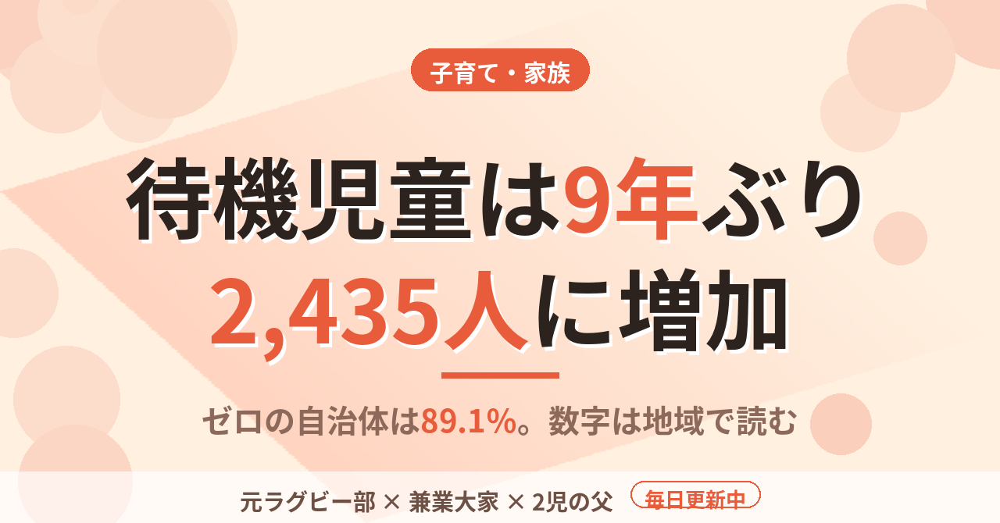

子育て・家族待機児童は9年ぶりに増えて2,435人。ゼロの自治体は89.1％。2歳と0歳の父が読んだ数字
子どもが2人いると、保育園という言葉がニュースに出るたびに手が止まる。2歳と0歳の父として、8月に発表された待機児童の数字を一度ちゃんと読んでみた。
2,435人は9年ぶりの増加だった
2026年8月28日に発表された数字によると、2026年4月1日時点の待機児童は2,435人。前年より181人増えて、2017年以来9年ぶりの増加になった。
自治体別の上位はいずれも東京都で、世田谷区が166人、足立区が106人、北区が103人。ここだけ見ると、状況は全国的に悪化したように読める。
ただ、別の数字もある。待機児童がゼロの自治体は1,552で、全国1,741市区町村の89.1％にあたる。約9割の自治体には、待機児童が出ていない。言い換えると、待機児童が出ている自治体は1,741から1,552を引いた189だ。増えたというニュースと、ほとんどの自治体はゼロというデータは、同時に成り立っている。
増加幅も計算しておく。前年は2,254人で、181人増は約8％の増加にあたる。数としては小さくない。ただ、全国の子どもの数から見れば、この2,435人は特定の自治体に偏って存在している。
増えた理由は、全国ではなく場所にあった
報道では、増加の理由として、一部の自治体で共働き世帯の利用希望が想定を上回ったことと、マンション開発が進んだ地域に子育て世帯が集中したことが挙げられている。
つまり、需要は全国で一律に動いたのではなく、特定の場所で急に膨らんだ。
僕は不動産を持つ側なので、この構図は見慣れている。賃貸でも、全国の空室率より、その駅の需要と供給のほうが入居に効く。保育も同じで、全国で2,435人という数字は、自分の家の話にはならない。
先日書いたこども誰でも通園制度も同じ構造だった。月10時間という全国共通の枠の上に、自治体ごとの運用の差が乗っていた。子育ての制度は、国が決める部分より、自治体が運用する部分のほうが、家の事情に直接ぶつかる。
家庭で見るのは、全国の数字ではない
共働きで2人を育てていると、保育の枠は家計や働き方の前提になる。育休を取った経験から言うと、復帰の時期も、通勤の組み方も、預け先が決まって初めて組める。預け先が決まらない状態では、仕事の計画そのものが立たない。
しかも、1人目のときに通じた感覚が、2人目のときにそのまま通じるとも限らない。住む場所や周りの開発状況で、状況が変わるからだ。近くに大型のマンションができれば、同じ地域でも翌年の状況は変わりうる。
この数字は4月1日時点のものなので、年度の途中で入りやすいかどうかは、また別の話になる。
僕の結論は単純で、全国平均を見て安心も不安もしない。見るのは、住んでいる自治体と、通える範囲の隣の自治体の発表資料だ。見出しを読むより、自治体の資料を1枚開くほうが、家の判断には役に立つ。
数字は全国の話で、暮らしは1つの自治体の話だ。この2つを混ぜないことが、読み方の第一歩になる。
この記事は note にも掲載しています。